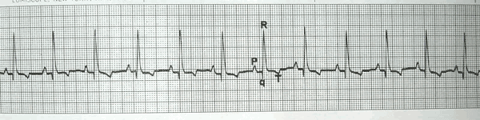
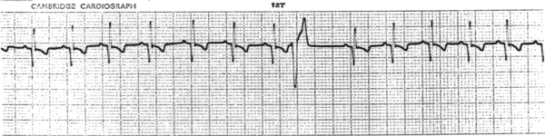
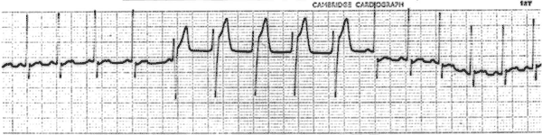
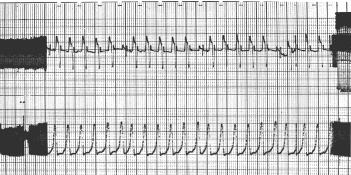
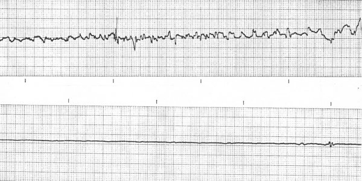

Ventricular tachydysrhythmias

Normal dog ECG.

Single ventricular ectopic beat.

A run of VEs.

VEs verging on ventricular tachycardia. The bottom trace is blood pressure -
note that the ventricular ectopic beats are still producing pulses.

Ventricular fibrillation (top) followed by asystole (bottom) and death.
back to positive inotropes (sympathomimetics, phosphodiesterase inhibitors and cardiac glycosides); antiarrhythmics.
| 6 Cardiovascular index |
| |
copyright
Massey University
|